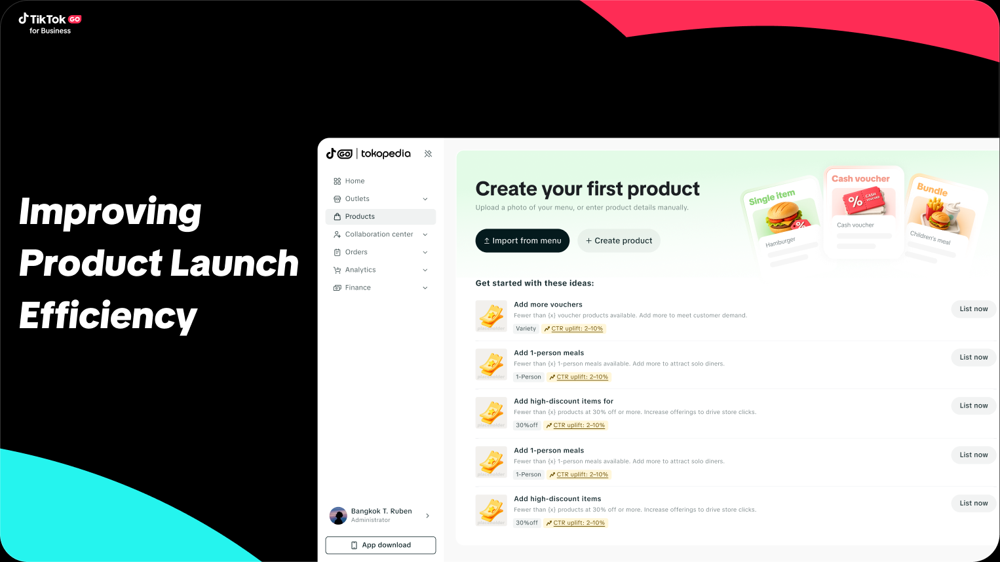
直接先看我总结
- 背景
- TikTok生服商家端商家发布商品链路优化
- 问题
- 当前核心字段冗余,发品耗时长,表单流失率高影响商品发布转化
- 方法
- 通过对表单字段重构,视觉信息层级优化与降噪与增加实时渲染提高商家感知,新增加上传线下菜单功能来达到降低商家发品时长.
- 结果
- 预期核心受益将发品时长达到3.5min以内, 一分钟内发品占比达到30%以上
必填字段多,导致发品耗时长,提高了表单流失率影响整体的 商品发布转化
分析竞品,观察当前主流的做法对应给出设计解法
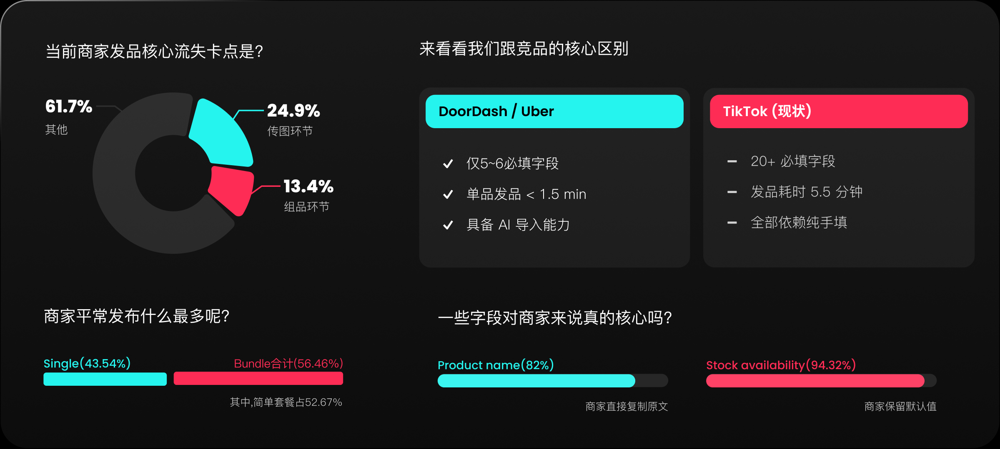
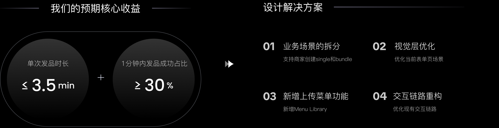
围绕降低发品时长控制在3.5min内做了哪些设计举措?
设计举措1
首先: 先从表单核心信息下手,减少到7+核心字段的填写
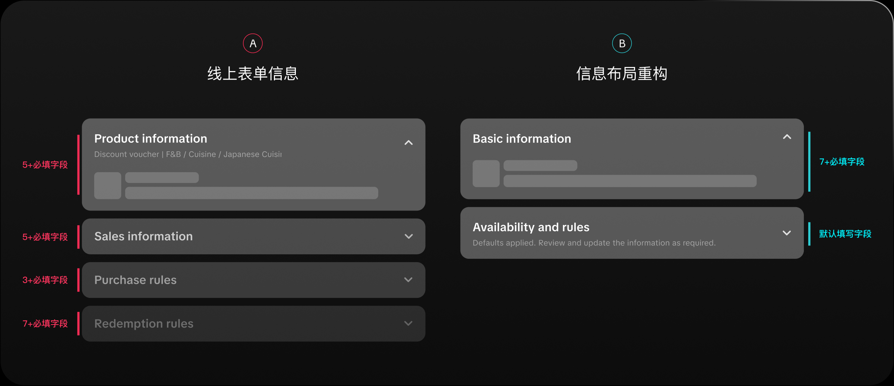
设计举措2
其余字段我们并不是“简单”收起,通过手风琴设计让商家快速感知信息
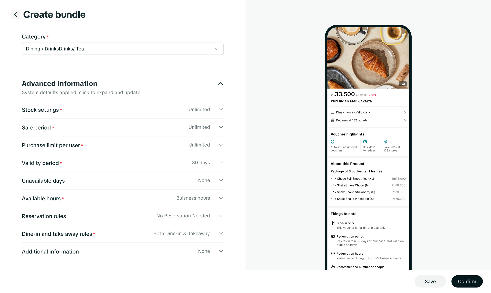
设计举措3
再次: 组件全局更新,扩大Padding,进行视觉信息降噪
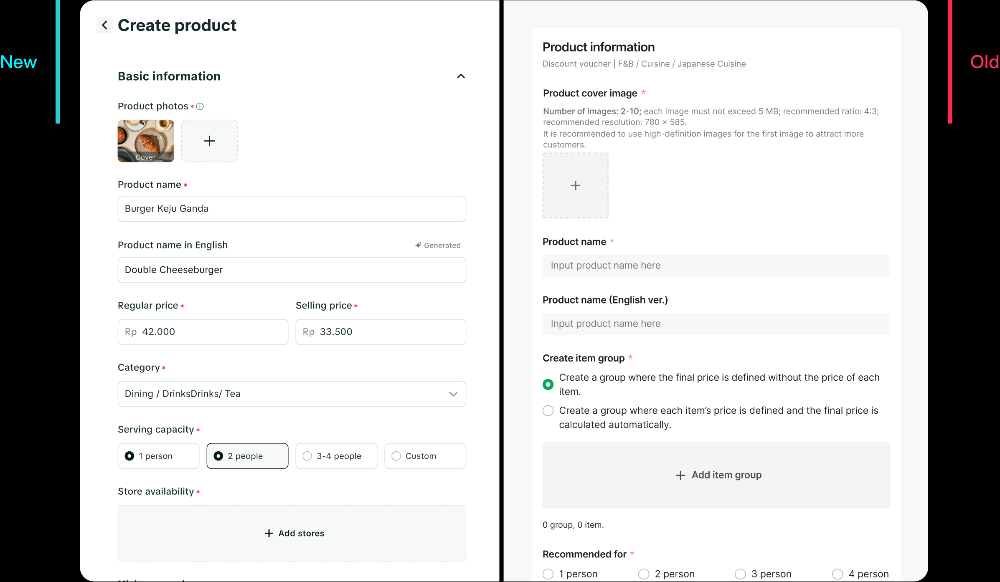
设计举措4
其次: 优化首屏信息透传,将抽屉表单修改为页面全局下钻 并进行视觉分区，降低认知混淆
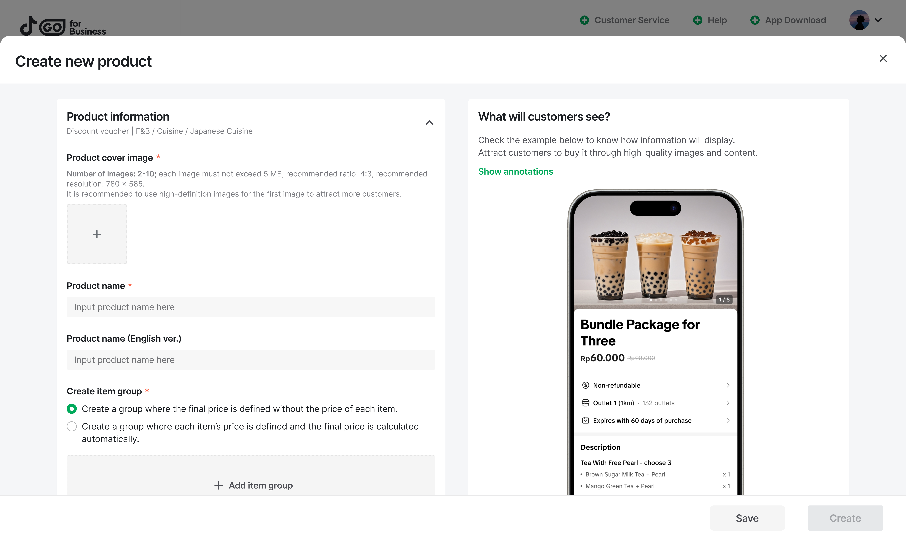
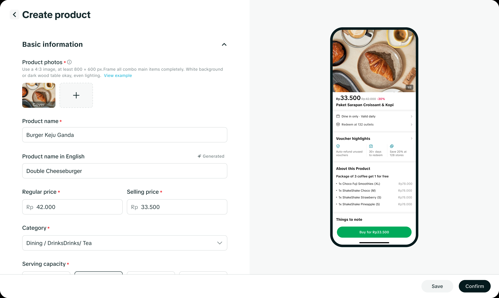
Before After设计举措5
最后: 支持动态渲染,商家填写表单可以对应实时查看C端PDP页面
业务价值: 所见即所得，消除脑补降低试错成本, 缓解表单流失并减少二次发布后的编辑率, 缩短商家整体发品链路耗时
以上是我围绕“达到3.5min内发品”做的设计举措,那怎么去完成1min内发品占比在30%以上来帮助商家发品提效呢?
- 新增上传「线下菜单」功能
研发说: 监测不到识别菜单的进度,无法做进度条只能做 加载但是长达15s左右,真的适合用加载吗?
- 新增「菜品库」支持商家快捷导入菜品信息到表单完
成发品
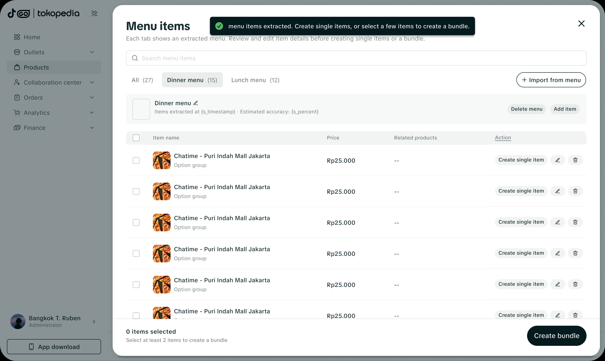
创建商品: 通过新增入口表单页Banner引导商家打开菜 品库
- Create product
- Single item
- Select item
- Confirm
- Create product
- Bundle item
- Confirm
PART FIVE
深挖验收背后潜在的问题
对于验收,绝大部分人的看法如“苦中作乐”/“找不同”,只要找到与设计稿不一致的地方,便记录提交给研发对应的问题,假设一个字号为16px,研发做成了14px,一个Gap 12px做成了8px,真的是研发没有仔细看设计稿所导致的吗?
以发品需求为例-研发写代码存在哪几大类问题?
视觉层偏差—工程侧建设的断层
color:研发可能直接采用吸色 假设一个颜色为#041A1D 透明度为55%,研发对应呈现的内容为E5e7eb, 虽然在肉眼上是相似,这样写是错误的, 对应css写法为 bgc-#041A1D8c, 这里的8c为55%的透明度.总的来说研发需要靠“猜”,因为研发不能理解什么时候使用对应的Token,不如直接写代码来的快,这会在我后续设计系统方面去体现如何解决
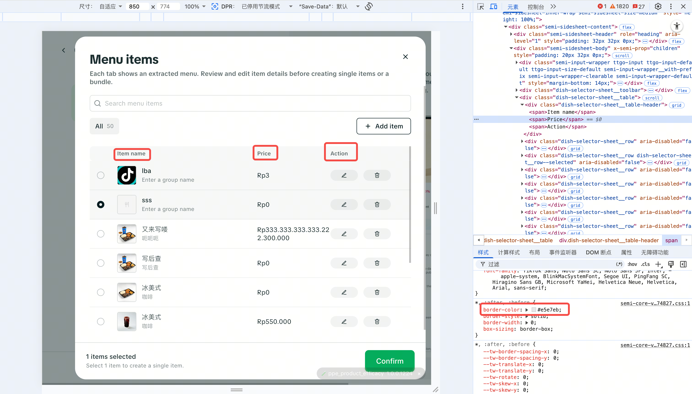
代码标签使用错误
在写代码过程中,盒子之间的margin或者padding节省工时,采用<div>换行,导致开发者工具测不出来,仅凭视觉上感受“相似”
工程侧与设计侧未做映射
研发在收到大量的走查问题清单,会尽可能的去避免一些问题,比如:组件就是这样做的,需要通知组件那边一起改, 这个问题改不了,等等一些结果性的回答. 具体解法需要先去了解组件是否样式达到了对齐,如果优先级比较高,建议对其做覆盖,不能单一的听研发说改不了,需要具体了解其逻辑才能保证我们的设计与开发达到一致对齐.
总结
从小的层面来说研发可能不知道对应的Token规范,开始时硬制编码写起来更快,Token收益未在研发流程中体现.大的层面来说整个设计系统与工程侧缺少映射关系,以及文档化建设.
从工程化的视角出发与开发沟通
以Form表单为例
研发在写代码过程中,涉及到Form表单会使用<form>标签,但是在早期对表单的定义含有Label且距离下方模块为8px,模块之间的Gap为24px,并适用于所有表单页,只要涉及<Form>标签,便逃不开这个数据,但是由于早期业务的快速发展,没有过多的时间关注具体的设计细节,表单涉及高密度和低密度场景都适用了一套semi设计规范
但是我们本期对Label距离下方的间距修改为12px,模块之间的间距改为28px,开发如何去实现? 短期需要做覆盖,我将把这套最舒适的布局适用于高密度场景表单中形成规范,推进研发新增一种适配.
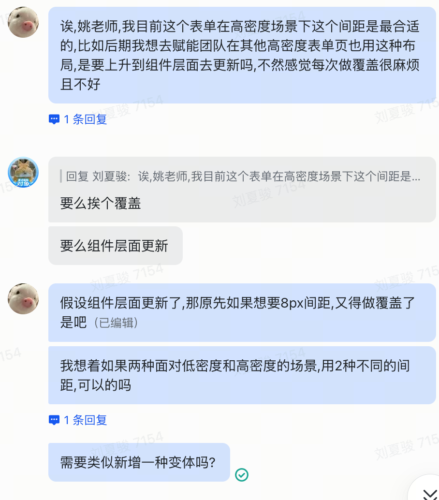
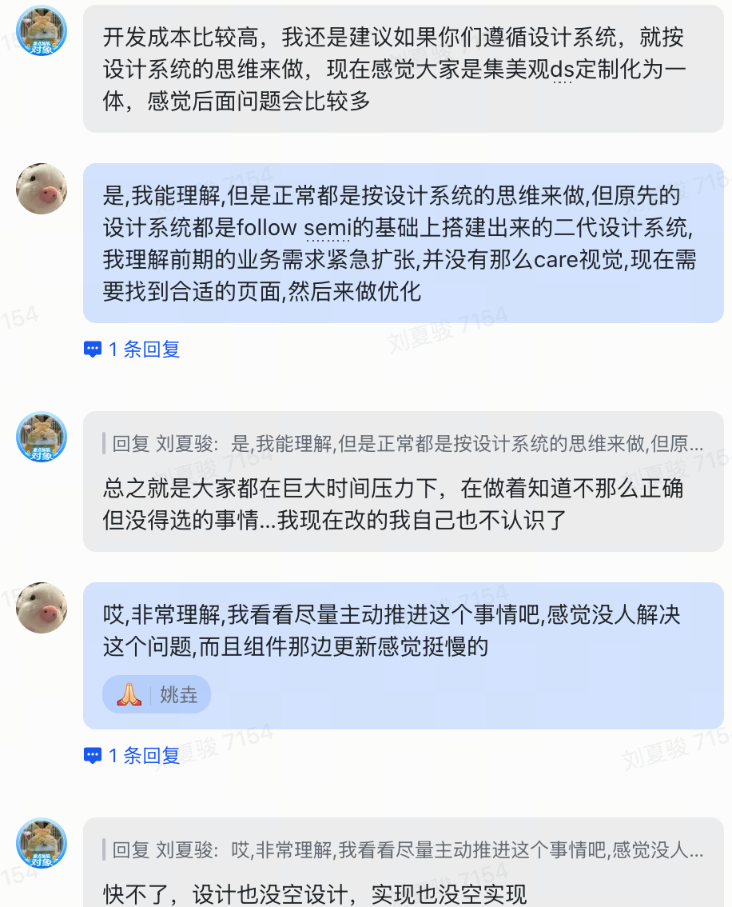
关于我的思考,并如何赋能团队
推进设计系统文档化建设
在验收过程中发现，组件层由于已有 npm 组件和 Token 约束，规范执行较为稳定。但在 Typography、Color、Spacing 等非组件场景中，由于缺少明确的语义化使用指导，研发在实现过程中更多依赖个人经验，导致设计语言无法稳定传递。因此我进一步思考如何通过 Design System 文档化和 Usage Guideline，将 Token 从“设计资产”转化为“团队共识”。需推进设计系统文档化建设.
新增Form表单规范
当前在B侧业务场景涉及多个表单页的场景,一个表单含有不同的间距、字体大小等情况,我将其所有场景聚合进行分析,沉淀出针对高低密度场景下使用不同间距的规范
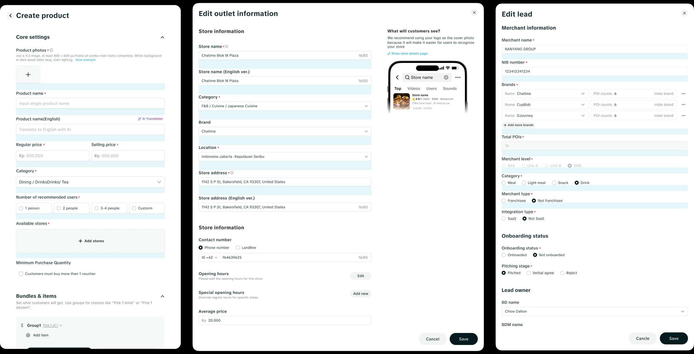
工程化约束
当前设计侧 Token 已具备，但在非组件场景缺少工程化约束，因此需要推动 Foundation Token 的文档化、映射和流程接入，让设计规范从设计侧资产转变为研发侧可执行规范。
这在我后续的设计系统相关内容有所体现
PART ONE
SMB注册登入流程优化
构建面向新商家的注册 / 入驻流程并上 App (区别于已有的“子账号注册”)。进入注册流程后提供入驻相关能力，底层逻辑与 PC 站一致。
点击这里打开飞书文档